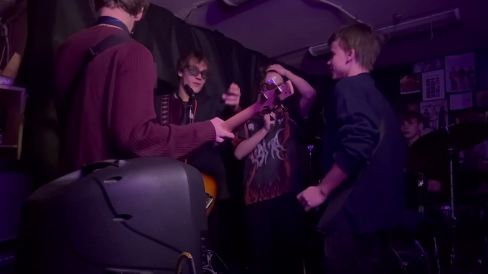
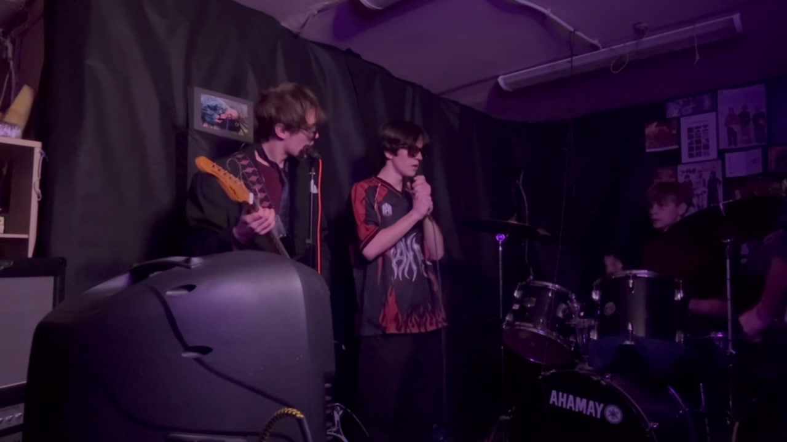

Введение
Объект и предмет исследования
Объект исследования — подростки, занимающиеся музыкальной деятельностью в составе творческого коллектива.
Предмет исследования — влияние коллективной музыкальной деятельности на личностное развитие подростков, а также развитие мышления и внимания.
Актуальность проекта
Актуальность проекта обусловлена тем, что в подростковом возрасте возрастает учебная и социальная нагрузка, что может приводить к стрессу, снижению мотивации и трудностям в коммуникации. В условиях цифровизации и уменьшения живого общения особенно важным становится поиск доступных форм творческой самореализации. Музыкальная деятельность, особенно в формате коллективной работы, способствует развитию навыков взаимодействия, саморегуляции и ответственности. Поэтому исследование влияния совместного музицирования на развитие подростков является социально и педагогически значимым.
Цель и задачи проекта
Цель проекта — изучить влияние коллективной музыкальной деятельности на личностное развитие подростков, а также развитие мышления и внимания, на примере музыкальной группы.
Задачи проекта:
- Проанализировать теоретические источники, посвящённые влиянию музыки на личностное развитие и когнитивные процессы.
- Рассмотреть особенности коллективной музыкальной деятельности как формы социального взаимодействия подростков.
- Провести анкетирование среди подростков для выявления отношения к музыкальной деятельности и её влияния на уверенность в себе.
- Проанализировать практический опыт участия в музыкальной группе и зафиксировать наблюдаемые изменения в развитии участников.
1. Теоретическое обоснование
В рамках проекта мы изучили, как музыкальная деятельность может влиять на подростков. Основной акцент сделан на том, что регулярная практика способна развивать внимание и мышление, а коллективная работа дополнительно влияет на коммуникацию, ответственность и уверенность в себе.
Психологические механизмы
Музыкальные занятия требуют устойчивого внимания, запоминания последовательностей и контроля действий во времени, поэтому могут формировать привычку к концентрации. Регулярность репетиций и наличие целей (разучивание партий, синхронизация, подготовка к выступлениям) поддерживают учебную дисциплину и саморегуляцию.
Социальный аспект
Музыкальная группа — это форма совместной деятельности, где подростки учатся договариваться, принимать обратную связь и распределять роли. Совместные репетиции развивают навыки сотрудничества и помогают формировать уверенность в себе.
2. Данные опроса
Мы провели анкетирование подростков. Анкета была разделена на две части: вопросы 1–4 были обязательными для всех участников опроса, а вопросы 5–9 заполняли только те, кто занимается музыкой.
Часть A (обязательная): ответы всех участников
Объём выборки: n = 21
1) Сколько времени в день вы слушаете музыку?
- 1–3 часа — 8 человек (≈38%)
- Постоянно фоном — 6 человек (≈29%)
- Более 3 часов — 6 человек (≈29%)
- Менее часа — 1 человек (≈5%)
2) Помогает ли музыка справляться со стрессом или плохим настроением?
- Да — 14 человек (≈67%)
- Скорее да — 5 человек (≈24%)
- Нет — 2 человека (≈10%)
3) Как музыка влияет на учёбу/работу?
- Помогает сосредоточиться — 9 человек (≈43%)
- Не влияет — 9 человек (≈43%)
- Отвлекает — 3 человека (≈14%)
4) Хотели бы вы научиться играть на инструменте или петь?
- Уже умею — 9 человек (≈43%)
- Да — 8 человек (≈38%)
- Нет — 4 человека (≈19%)
Часть B (для занимающихся музыкой): результаты
Объём выборки: n = 13 (в отдельных вопросах n = 12, так как один участник пропустил ответ)
5) Как изменилась уверенность в себе после начала занятий музыкой?
Оценка по шкале 1–10: среднее значение ≈ 6,8, медиана — 7 (n = 13).
6) Стали ли вы более дисциплинированными в других делах (учёба, режим дня)?
- Да — 9 человек (≈75%)
- Нет — 3 человека (≈25%)
Ответили: n = 12
7) Стало ли легче общаться с людьми и находить общий язык в коллективе?
- Да — 9 человек (≈75%)
- Нет — 3 человека (≈25%)
Ответили: n = 12
8) Что самое сложное в занятиях музыкой/группой?
- Поиск времени — 6 ответов (50%)
- Страх сцены — 2 ответа (≈17%)
- Техника игры — 2 ответа (≈17%)
- Конфликты в коллективе — 2 ответа (≈17%)
Ответили: n = 12
9) Чувствуете ли вы «разрядку» или прилив энергии после репетиции?
- Да — 12 ответов (100%)
Ответили: n = 12
Иллюстрация результатов
Ниже размещён график.

3. Практический кейс (Case Study)
Наша группа существует 1 год. За это время мы отметили изменения, связанные с организацией репетиций, развитием ответственности, коммуникации и навыков концентрации.
Научился организовывать людей и планировать репетиции. Стал более стрессоустойчивым.
Разобрался в аппаратуре. Развил инженерное мышление и внимание к деталям.
Через написание текстов стал увереннее выражать мысли. Улучшил навыки речи.
Развил дисциплину. Игра на ударных помогла тренировать концентрацию и чувство времени.
Освоил цифровые программы. Научился работать в команде и слышать других.
4. Фото-материалы (процесс работы)
В данном разделе размещаются авторские фотографии, фиксирующие практический этап проекта (репетиции и взаимодействие участников).
Фотография 1
Фотография 2
5. Видео- и аудиоматериалы
Фрагмент репетиции демонстрирует процесс взаимодействия участников (невербальная коммуникация, синхронизация и распределение ролей).
🎧 Аудио-материал
В данный момент мы находимся на стадии студийной записи авторского материала. Аудиоматериал находится на этапе подготовки и является частью практического этапа проекта.
Источники и их анализ
1) Список использованных источников
Оформление приведено в учебном/ГОСТ-подобном стиле.
- Теплов Б. М. Психология музыкальных способностей. — М.: Педагогика, 1985. — 256 с.
- Выготский Л. С. Психология искусства. — М.: Искусство, 1986. — 344 с.
- Hallam S. The power of music: Its impact on the intellectual, social and personal development of children and young people // International Journal of Music Education. — 2015. — Vol. 33(3). — P. 285–299.
- Российская академия образования. Материалы о развитии творческих способностей обучающихся [Электронный ресурс]. — URL: https://rao.ru (дата обращения: укажи дату).
- Music and the Brain // Psychology Today [Электронный ресурс]. — URL: https://www.psychologytoday.com (дата обращения: укажи дату).
2) Анализ использованных источников
В ходе работы над проектом были проанализированы как классические психологические труды, так и современные научные и научно-популярные источники. Книга Б. М. Теплова позволила рассмотреть влияние музыкальных занятий на развитие мышления и внимания, а также особенности формирования музыкальных навыков. Работа Л. С. Выготского помогла раскрыть роль искусства как средства формирования личности и социализации.
Современные исследования, представленные в статье S. Hallam, подтвердили положительное влияние музыкальной деятельности на когнитивное развитие и учебную мотивацию подростков. Электронные ресурсы Российской академии образования и портала Psychology Today использовались для уточнения современных педагогических и психологических подходов к развитию творческих способностей в школьной среде.
Итоги и рекомендации
По результатам теоретического анализа и анкетирования можно сделать вывод, что музыка для многих подростков является способом эмоциональной поддержки, а для занимающихся музыкой также связана с развитием дисциплины и навыков общения. Практический опыт участия в группе подтверждает важность командной работы, регулярности и фиксации прогресса.